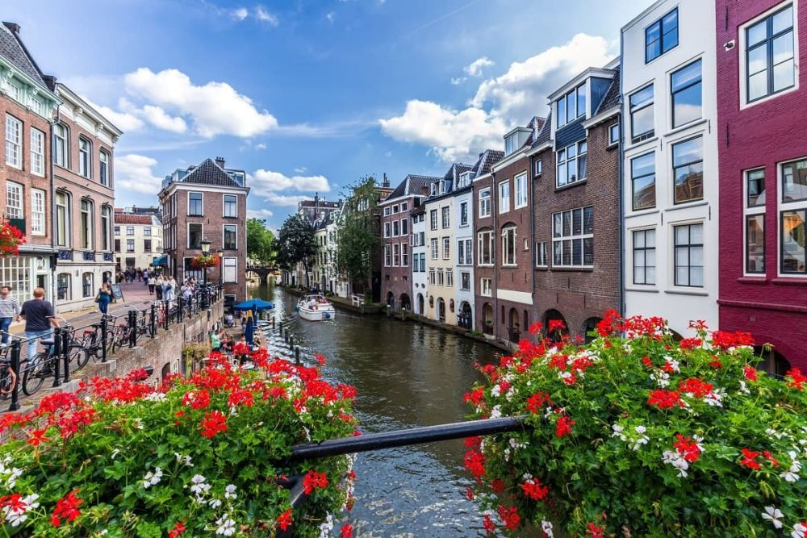

Descoperă Utrecht - Orașul istoric și vibrant din inima Țărilor de Jos
Utrecht este un oraș fermecător din inima Țărilor de Jos, cunoscut pentru istoria sa bogată și viața culturală:
-

Canale pitorești
Orașul este traversat de canale idilice, oferind priveliști impresionante și plimbări romantice.
-

Catedrala Domtoren
Domtoren, turnul catedralei, oferă vederi panoramice asupra orașului și este un punct emblematic.
-

Muzee variate
Orașul găzduiește diverse muzee, cum ar fi Muzeul Centraal Museum și Muzeul Nijntje (Miffy).
-

Străzi pitorești
Centrul vechi este plin de străzi înguste, cafenele și magazine, invitând la explorare.
-

Parcuri și natură
Orașul oferă parcuri liniștite, precum și Grădina Botanică Universitară.
Concluzii
Utrecht îmbină frumusețea istorică cu atmosfera modernă, oferind o experiență autentică în Țările de Jos.